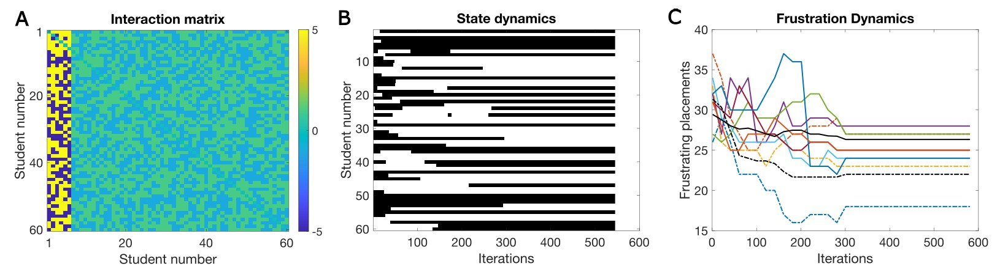
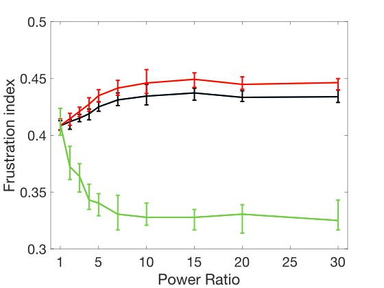
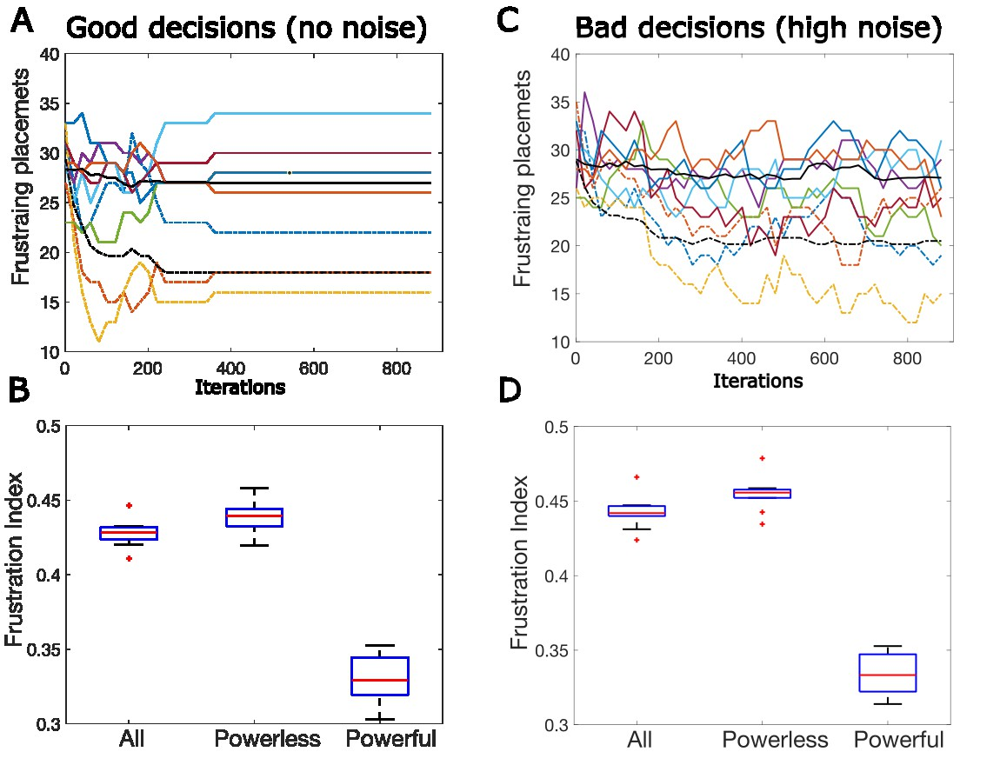
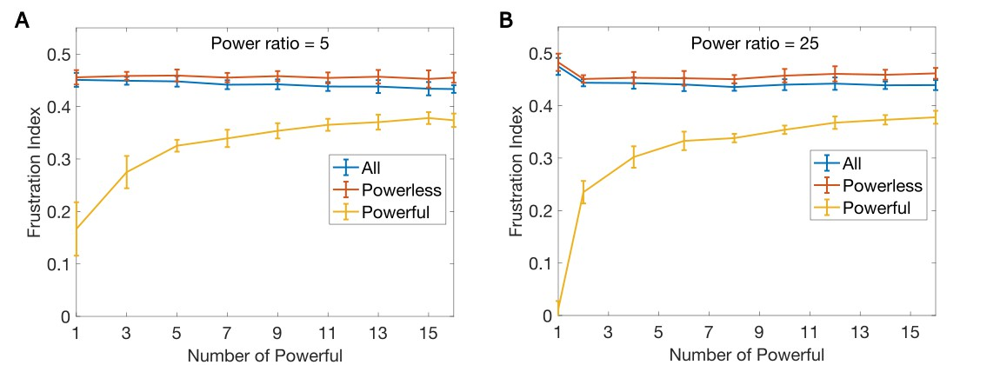
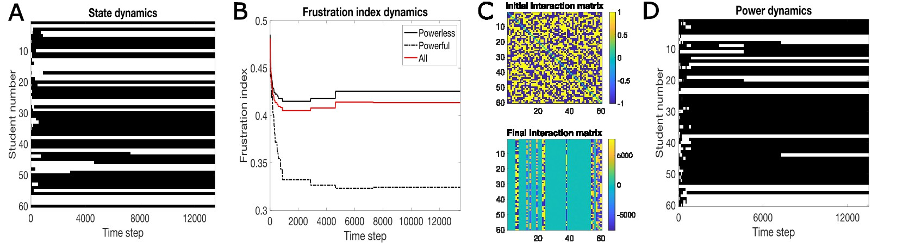
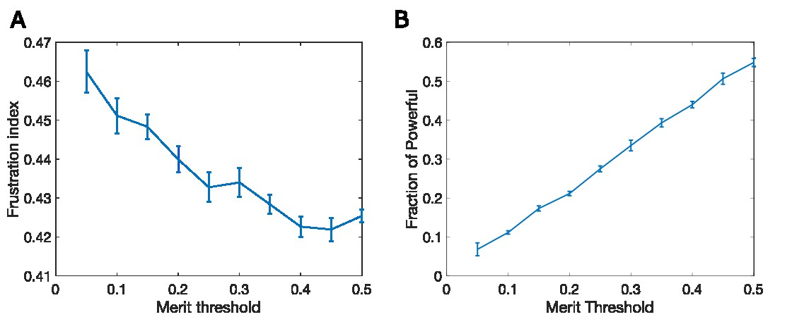
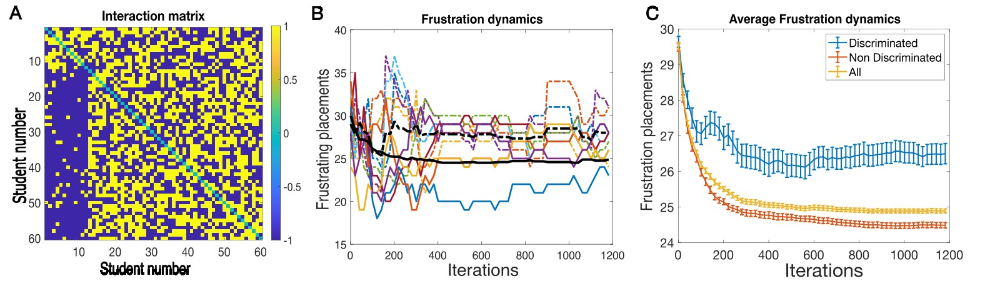

“What you got totally wrong is that you ignored Andrew and Savanah,” Madison told me. “Who are Andrew and Savanah?” I asked. “You don’t know Andrew and Savanna? In what world are you living?” she said. “I like Andrew and he likes me too - I think,” she clarified. “I have to be in his class, though, even if many of my other friends are not there, because if I am not in his class, he will make my life miserable. Savanah, she is just the opposite: she would make my life hell if we were in the same class. I’d do anything not to be in her class, even if that means being in the same class as Janel.” She then added, “Both Andrew and Savanah are really powerful in some way, whether you love them or hate them. Most people think so, not just me.”
So now I am being hounded, not only by my wife but also by Madison. It’s one thing to have my wife doubt me, but Madison, I created her. I therefore feel compelled to address Madison’s concerns, which is what I do in this chapter. In my simplifying assumptions in the original democratic classroom, I ignored many things; a few of them relate to Madison’s concern. First, that when we like people, we do not like them all to the same degree: some we like a lot, and some a little, and the same goes for people we dislike. Second, some people are more powerful in the sense that a large group of kids have stronger feelings, both positive and negative, about them. It is this second point, the role of power in a democracy, that I address in this chapter.
The democratic classroom outlined above is an egalitarian model: each student is liked and disliked by approximately the same number of students, and no one has more power to affect the decisions of other students, be it a positive or negative power. Here, we will examine the impact of a power differential. What happens if some students have more power? How does that affect the frustration of the whole population, and the frustration of the more powerful or less powerful groups?
To examine this, we can imagine a new version of the classroom game. Here, it’s assumed that not all students are equal: some might be more popular, more attractive, better at sports, richer, or in other words more powerful. How does that change the outcome of frustrations in an otherwise democratic classroom? We model this by assuming there is a group of powerful students and that the influence on others, both positive and negative, is larger than the influence that other students have on their peers.
To be more specific, let’s assume there are some more powerful students in class, for example Andrew Perry the III is a student in this class, and he is very powerful. He likes Madison, and Madison likes him, but his effect on Madison’s decision is five times stronger than the effect Madison has on him, so Madison would choose to be in the same class as him, even if that means sacrificing four other friends. However, Madison does not have this special place in his heart; for Andrew Perry, she is just one other friend, with no special power. On the other hand, his effect on Omar is negative. Omar really does not want to be in the same class as him, so Omar may choose to be in a different class, even if it means leaving four of his other friends behind.
Here, we did not specify how this power was acquired. Let’s assume for now that it is in some way inherited. What do we call those students with inherited power? We can call them ‘nepotism babies,’ ‘oligarchs,’ ‘plutocrats,’ ‘the chosen,’ ‘the masters,’ ‘the Gods,’ or some will call them ‘the makers’. I will mostly call them ‘the powerful’, but sometimes use some of these other terms. What should we call the ones with less power? We can call them ‘commoners,’ ‘slaves,’ or ‘mortal,’ and some will call them ‘the takers’. I will mostly simply call them the ‘powerless.’ This might be simplistic, because they do have some power, but much less than the powerful. ‘Powerless’ here means they have less power, not no power.

To examine the effect of a power differential, we simulated the class choice process in the non-egalitarian, yet nominally democratic classroom, a classroom in which a small fraction of the students has more power to influence the decisions of the other students. In the example shown in Figure 4.1, 10% of students (six students) are more powerful than the others. What power means here is that the powerful have more influence on the decisions of other students, both whether these other students want to be in the same class as them or in the other class. These students are not more popular; they are more influential. The power ratio in this example is 5:1 (Fig. 4.1). This fraction of oligarchs and their power differential is conservative, as currently in US society the top 10% hold 90% of the wealth.
To simulate the model, we use a class switching rule that is similar to the one used in the egalitarian case, except that the powerful have more influence on the decisions made by other students. However, as discussed above, and shown in Box 4, when the interaction matrix is not symmetric, the dynamics are not mathematically guaranteed to converge. In practice, though, for the democratic classroom with a power differential, the dynamics usually converge (see Figure 4.1B).
The Democratic classroom game. Play the game a few times, and notice the difference between being powerless and powerful. Note that there are now also separate frustration plots for the powerful (black) and the powerless (green). The color of the box you are placed in is a lighter peach color, similar but lighter than the color of the other students whom you like.
To see how this power differential affects your frustrations, you can play the oligarchic classroom game. Play it several times because the results are different from run to run. In each run, it greatly matters whether you are randomly chosen as a powerless or powerful player. Note that the probability of being powerful here is 10%, so you may need to repeat the game many times to experience the joy of oligarchy. In these simulations, we assumed a power differential of 10:1, i.e. each one of the few oligarchs is 10 times more powerful than a single powerless student. When you play the game, observe your own frustration level (blue) and the average frustrations of the whole class, (red) and compare them to the frustration levels of the powerful (black). Note this for the many cases where you are powerless, and for the few cases where you are powerful.
The results in Figure 4.1C show a single run from such a game. On average, both the powerful (dashed lines) and the powerless (solid lines) become less frustrated due to the choice process. Overall, in this example, the frustration index decreased from 0.5 to 0.43, a 14% reduction. However, most of this improvement was due to a larger decrease in the frustration of the powerful to 0.367, whereas the powerless decreased to only 0.44. The improvement for the powerful was 26%, whereas for the rest it was only 12%. The average reduction in frustration is significantly lower than for the egalitarian case (20% reduction), but the powerful are less frustrated than almost anyone in the egalitarian case. For them, life is good.
In Figure 4.1, a power ratio of 5:1 was assumed, and in the game played the ratio is 10:1. How do the results depend on the specific power ratios? To address this question, the same type of simulations was carried out over a range of power ratios. How does the power ratio affect frustration levels?
To examine this question, I ran different simulations over a range of power ratios, from 1 (an egalitarian case) up to 30 (a gilded age or current age example). These results, summarized in Figure 4.2, show that as the power ratio increases, the powerless become more frustrated, the chosen ones become less frustrated, and society, on average, becomes more frustrated. Even when there is a power differential, the powerless are a little happier on average than they would have been in a random class placement where the frustration index is 0.5. As the power ratio increases, frustrations on average monotonically increase, as does the difference between the powerful and powerless. Interestingly, once we exceed a power ratio of about seven, the curves reach a plateau: the chosen ones do not get happier, and the mortals do not get more frustrated. This might be troubling to some of the chosen ones, even though more wealth is passed over in each generation; their children do not get any happier. So, for example, Andrew Perry the III might be unhappy about this, since it indicates that even if he gets ten times richer during his lifetime, his son will only get marginally less frustrated.

Did you play the oligarchic classroom game? Did you play it enough times to randomly become an oligarch? Was it frustrating to play it as someone powerless where your decisions had very little impact on your frustration levels? Was it annoying to wait for ten trials on average until luck was on your side and you became powerful? Alternatively, this might not have bothered you because you did not see power as defined in the game as relevant to your life. To address whether this is relevant to us, I will now discuss what forms power takes in human society and the effect of power differentials in the social and political reality.
What is power in the social world? In the classroom model, power is simply how much influence each person has on the decisions of other people. I do not explain the source of this influence; I simply assume that it exists. What is the analog of such increased influence in the real social and political world? In some cases, it could simply be physical power, or aggression, but even in hunter-gatherer societies and even in the animal kingdom, this is probably an oversimplification. The work of Francis de Wall and others on hierarchy in primates has shown that alpha males, the most powerful members of the group, while usually physically strong, require other leadership skill as well.2 They engage in group politics, have many close relationships with other individuals, and often have the support of other strong members of the group, both male and female. When a chimpanzee becomes the alpha male, they also typically exhibit high levels of empathy and evenhandedness. Unlike in human society, where wealth and power are often inherited, their status is not hereditary. What is the benefit of power for chimpanzees? According to de Wall, it is all about access to sex and reproduction. He also notes that there are costs to being an alpha male because of the work and stress involved in maintaining this position.
Like for other social animals, power in human society is mostly about social interactions, and this aspect is roughly captured by the oligarchic classroom model. What is the aim of power in human societies? Is it just for sex and reproduction? If that was the case, we would expect to see that very powerful humans have more offsprings. Can you think of any examples where that is the case?
One aspect of how power is used by humans, not captured by the oligarchic classroom game, is that powerful people can change the rules of the game. In autocracies and oligarchies, the powerful control policy and legislation and often the courts, making it easier for them to become even more wealthy and powerful. According to our model, democracies with large power differentials are similar to oligarchies. In a later section, I will address cases in which the rules of the game change as well. Up to here, the only thing that changes in the classroom model is which class each student belongs to. Once we consider how the rules of the game can change, we will also allow the interaction matrix to change. Such modification of the game will be included in later sections and chapters.
What I have shown up to now is that as the inherited power ratio increases, the level of overall frustration increases. In such a system, the frustration levels bifurcate. Frustration levels of people in the powerless population are hardly reduced by their decisions. In contrast, the powerful become much happier, and they think to themselves what a wonderful world.
For some, mostly those of us who do not inherit power, this might be troubling, and we might be looking for a way to fix this. Previously, I have shown (section 2.2) that if we assume people sometimes make bad decisions (implemented by adding noise), things might improve in some way. Overall satisfaction does not increase because on the noise; it even might slightly decrease. However, the identity of the people who are more frustrated or less frustrated changes over time, so over their lifetime the level of frustration of all people is similar. In other words, bad decisions or noise ‘melt’ the system. The deterministic system (without noise or bad decisions) quickly freezes, i.e. nothing changes over time. The addition of noise ‘thaws’ the system and people change their level of frustration over time (Fig. 2.4).
Would allowing bad decisions, or noise, in a model with power differentials cause the overall frustration to decrease compared to the noise-free system? To test this, I added noise to the oligarchic classrooms, which means that people sometimes make bad decisions. In Figure 4.3, I compare an oligarchic classroom with no noise (Figures 4.3A and 4.3B – left) to an oligarchic classroom with a lot of noise (Figures 4.3C and 4.3D – right). We see from this figure that adding noise somewhat thaws the systems, and individual levels of frustrations are no longer frozen. This can be seen when comparing the flat lines on the left (Fig. 4.3A, no noise) to the wiggly lines on the right (Fig. 4.3C, high noise). However, the powerful (dashed lines) remain on average much less frustrated than the powerless (solid lines). In other words, this level of noise does not save the day; it does not decrease the average levels of frustrations and does not shift people between the more and less frustrated groups.

Is this just a fluke of this specific simulation, or is this what happens in general? The bottom plots provide statistics for this, over many independent simulations. In Figure 4.3B, we see the frustration level statistics for the total population, the powerless, and the powerful. In this figure, the red lines are the medians, and the boxes represent quartiles, which are a measure of variability across different simulations. As shown before, the powerful are much happier. Adding noise (Fig. 4.3D), however, does not make the distribution of frustration any more egalitarian. In other words, bad decisions, or noise, do not save the day (or foil god’s plans, depending on your point of view) when the world is structurally biased. To me, these results are disappointing, but for Andrew they might be comforting, because the addition of noise does not increase the frustration level of the powerful. In other words, these results indicate that he and his offspring could be stupid, make many bad decisions, and still retain their advantage over the powerless.
One might ask why this is the case. Why does noise not reduce frustrations of the powerless group? Why is the effect of noise so different in the egalitarian system? To understand why this happens, we need to remember how decisions are made. In the egalitarian system, each student in turn calculates a signal, which is related to the number of friends they have in each class, and the decision is based on that number. However, in this oligarchy, it is no longer simply the number of friends one has, since students who belong to the oligarchy count more, so they influence the signal more. However, the noise added is constant: it is the same on average for the powerful and powerless. Therefore, adding constant noise affects and degrades decisions relating to the commoners, more than to the oligarchs. What this means is that to right an unfair world, adding the finite level of noise to everyone does not fix the problem. If a very higher level of noise is added, such that the decisions for everyone are almost random, then everybody will be equal – equally screwed.
As noted earlier, Andrew George Perry the III is very unhappy with the results shown in Figure 4.2. These results indicate that it does not matter how powerful he becomes; he will still be frustrated. In a just world, people like him should not be frustrated at all. You should not think he is selfish, though. What bothers him most is that no matter how more powerful he becomes, he will not be able to make his children less frustrated. If that is the case, then what is the motivation for him to work harder? If he will not work harder, what will the world come to?
To investigate why even with a large power differential, the frustrations for the powerful are not eliminated, we ran simulations in which we varied the number of powerful students. The number of powerful students was varied between 1 and 16 for a class size of 60. These results are shown in Figure 4.4. The same type of simulations were run for a power ratio of 5 (Fig. 4.4A) and of 25 (Fig. 4.4B). What both plots show is that as the number of powerful students increases, the frustration of those in the powerful class increases. The best-case scenario for the powerful is that there is only a single powerful person and that they have a large power ratio with everyone else. In such a case, as shown in Figure 4.4B, the frustration level of the all-powerful student is near zero.

These results do not happen only for this small class size (N=60). For much larger class sizes, the same qualitative results occur: as the number of powerful increases, their frustrations increase. The best-case scenario for the powerful is always when there is only a single powerful person, i.e. plutocracy or oligarchy are not sufficient. Maximizing the happiness of the powerful requires an autocracy, with a single powerful person. This should make Andrew happier: he and his offspring (at least one of them) could be frustration free; all that needs to be done is eliminate the other powerful students.
Why is this the case? Consider the difference between a group of students that has one powerful student and a group of two powerful students. If Andrew is the only powerful person, then almost any person he likes will be in his class, and any person he dislikes will be in the other class. However, let’s assume that Savanah is as powerful as Andrew. If they dislike each other, they will be in two different classes. However, they might both like Mia. If Mia chooses to be in the same class as Savanah, then Andrew will be frustrated. The same type of problem can occur if Andrew and Savanah like each other. As we know, Andrew likes Madison, but Savanah does not. If Madison is in the same class with them, Andrew will be happy and Savanah will be frustrated; if she is in the other class, Andrew will be frustrated. Mathematically, it is easy to show that if there are two powerful students, their lowest average frustration index level will be 0.25. This holds for any class size; it can be higher than 0.25 for a lower power ratio, but cannot be lower at any power ratio.
These results suggest that in any oligarchy, the oligarchs have an interest to reduce the number of the other oligarchs, which makes oligarchies inherently unstable. Such a problem does not occur in an autocracy, because only one person has power, so even though the others are frustrated, they are also powerless. So, what can they do about it?
In an egalitarian system, all people remain frustrated, and even an oligarchy does not eliminate the frustrations of the powerful. This observation gives us a better understanding of the frustrations of some of the most rich and powerful people in the world. In other words, Andrew’s predicament could make us more sympathetic or even empathetic to the similar predicament of real-world plutocrats.
Marc Andreessen is an American billionaire. He was a pioneer in internet technology, and was one of the founders of Netscape, which made one of the first commercial internet browsers. He later became a very successful venture capitalist with Andreessen Horwitz. He is also a strong advocate of cryptocurrencies. What are cryptocurrencies? You might have heard about them, but never really understood what they are, how to use them, and what they are good for. This is a common notion, but it is strange because bitcoin, the best-known cryptocurrency, was created in 2009. Clearly, so many years after this amazing invention, we all use it for shopping in the supermarket, for buying online, and while trying to launder our vast fortune generated by selling drugs. In 2024, Andreesen said: “If there's a reign of terror from the government for AI the way that there has been for blockchain, the country is in profound trouble.3
This sounds scary and serious when coming from such a successful and rich person. What is this reign of terror? Obviously, you have heard of raids by the FBI and US Army marines on bitcoin investors, who were then sent to concentration camps never to be seen again. You haven’t heard about it – it didn’t happen? So, what was it? Oh, maybe that the government successfully prosecuted Sam Bankman-Fried, who started a huge cryptocurrency exchange. He was prosecuted for fraud and money laundering, for which he was given a 25-year prison sentence. Not that either? Oh, could it be that elected officials wanted to legislate and regulate cryptocurrencies, which is their job as elected officials? Close, but not precise. It seems that primarily, the government officials wanted to legislate, but not to follow his prescriptions for how to legislate? For someone like Andreesen, just like for Andrew George Perry the III, that intervention by elected officials in the way his country is run is probably why he calls their actions a reign of terror.
Similarly, Peter Theil, an even wealthier investor, said in 2009: “I no longer believe freedom and democracy are compatible.”4 A simple question to ask regarding this statement is: freedom for whom? I think we know the answer to that. As discussed above, we also know how this problem can be solved. The only thing we do not know is the identity of the autocrat.
‘But I work harder and I’m smarter, which is why I have more, and if you reduce my incentives, I will have no reason to work harder and then all of us will suffer.’ This is a paraphrase of a common statement, one often made by ‘libertarians’. There is a moral dimension to this claim. The moralistic basis of this idea is that people should be rewarded based on merit. Not everyone is equal: some people are smarter, some are physically stronger, some work harder, and morally they should be rewarded for this.
This merit-based approach is a fundamental moral challenge to the egalitarian point of view. This approach also claims that by rewarding merit, society as a whole benefits. A system that does not reward talent and effort must fail because if everyone gets the same benefits, irrespective of their talents or effort, those who are most talented and hard working will have no incentive to work hard, from which society will suffer.
To provide additional benefits based on merit, one needs to know how to measure merit. How do you measure talents or effort? One could measure hours worked to measure effort or have standardized tests to measure talent. However, some people might work many hours but not do much, and what do standardized tests show? Possibly nothing related to the real world. Even if such tests indicate real potential, they do not show if this potential has been or will be realized. An alternative is to measure merit simply on the basis of success in the real world. A merit-based approach could therefore compensate success as a proxy for merit, as an objective way to measure real-world merit. This, it could be claimed, is both moral and practical; it will improve the world and benefit most people.
To me at least, the idea of rewarding merit does make sense. Currently, the models I have used do not have a property that can be equated to merit; all that is done in these games is choose a classroom to minimize frustrations, and no significant skill is involved in that task. However, measuring merit is not a simple task, and equating merit with success could be highly problematic. To examine this question, a variation of the democratic classroom model could be useful.
Such a ‘merit-based’ approach is found everywhere in the real world. For example, people with more money in their bank account do not have to pay fees; they get higher interest rates on savings and lower interest rates on borrowing. Presumably, the balance of your bank account reflects merit: you earn more, spend less or both, and therefore you are more trustworthy from the bank's point of view. In truth, though, the bank has a financial incentive to keep richer customers, independent of why they have a higher balance in their bank account. Trust fund babies, according to this metric, have just as much merit as people who worked hard and obtained a good bank balance based on their own accomplishments.
In the educational realm, we find that students who went to better schools have more chances of being accepted by highly ranked universities; students who went to highly ranked universities get better jobs and higher salaries. The merit-based approach is the norm, and might have, shall we say, some merit.
As an example of why equating merit with success might be misleading, consider a company with several people working in sales. Each person gets a different region to work in, and some sell more than others. How much they manage to sell might depend partially on their skill, but it will also depend on the regions that they were allotted, and this is not under their control. Each of them receives bonuses, which are proportional to their sales. In addition, the company wants to promote better salespeople to increase sales. To accomplish this, the company decides to increase the size of the regions of the more successful salespeople, while reducing the sizes of the regions of those with less merit.
When these people got their jobs, no one could tell who would be better. There were some indications based on their work experience, and on their grades in school, but in truth none of these proved to be a good predictor of who would succeed. There was no good measure of merit for this job, so instead what was used as a proxy for merit was success. Does this approach incentivize real skill or hard work, or does it promote those who were lucky to get better regions at the outset? It is hard to tell; both aspects are conflated in the sales volume.
So, how can we modify the egalitarian classroom of the previous chapter to also take ‘merit’ into account? Remember that in the simulations we ran in Chapter 2, Jennifer became less frustrated than all other students, and let’s assume that Omar was also less frustrated than almost any other student. According to the merit-based metric, they are more successful than most other students. Based on this success, we will assume Jennifer and Omar have more merit. To implement rewarding merit in our simulations, we will slightly increase the power of the less frustrated students by increasing their influence on the other students. This will be explained below in more detail.

To implement the merit-based approach in the democratic classroom simulations, I modified the model of the democratic classroom. Like the democratic classroom, we start with an egalitarian symmetric interaction matrix. Where it differs is that after every set number of iterations, we pause to test for merit. How could we evaluate merit? A simple way is to measure success. To measure success, we simply count for each student how many frustrated placements they have. We then look at the resulting histograms, such as those presented above in Figure 2.2. Those on the left side of the histogram are less frustrated, and therefore according to this logic are assumed to have more merit.
Specifically, to reward ‘merit’, we set a merit threshold, and those who cross the threshold are rewarded with an increase in their power. A ‘merit’ threshold, for example, could be those in the lowest quarter of the number of frustrating placements (for example, look at Figure 2.2). The increase in power is accomplished by making their effect on other students slightly larger. Here, we simply magnify the values of the corresponding column in the interaction matrix by a very small fraction every time we test for success (see Box 4 for details).
What does rewarding success do? In Figure 4.5A, we show that class placements stabilize, as they did in previous cases. However, note also that they do so on a slower timescale. We use the merit threshold not only for reward purposes but also to identify the powerful and powerless. Those who cross the threshold are the powerful; those who do not are the powerless. Using this classification, we measure the frustration index for the whole class, and for the two groups separately.
The results of such simulations are in Figure 4.5B. Initially, the frustration index for the whole class (solid red) and for the powerless (solid black) and the powerful (dashed black) decreases. However, after this initial phase, the frustrations of the powerless, and of the average of the whole class, rise a little, while the frustration index of the powerful keeps rapidly decreasing until it plateaus. The reduction in the frustration index for the whole class is clearly smaller than for the egalitarian classroom (Fig. 2.2) and is similar to the ‘oligarchic’ classroom when there is a large inherited power differential (Compare Figure 4.5 to Figures 4.2 and 4.3).
Let’s take a closer look at how such an approach might naturally arise in a classroom, and how it might affect the students. For example, remember that Jennifer was the least frustrated student in the initial meritocratic classroom. It is likely that she would be happy and smiling. In contrast, some of the other students, for example Roger, might be less happy initially. It’s possible that after a few weeks of class, the teacher, Mrs. Jones, would say: “Why couldn’t all of you be as nice as Jennifer? Look how many friends she has. She smiles all the time and that’s why everyone likes her.” As a result, Jennifer’s friends might want even more to be in the same class as her; however, the people who did not like her to start with might become pissed, and desire more strongly not to be in the same class with her. Consequently, students might want to switch classes again: some to leave the class where Jennifer is the teacher’s pet, and some from the other class to move to Jennifer’s class because of how cool she is. As a result, Jennifer would have even more friends in her class and be even happier, and the teacher would like her even more.
What is surprising in the theoretical analysis above is that it shows that because of this process, although Jennifer and a few other favorites would become happier, the average level of frustration in both classes would increase.
Why is it the case that frustrations in the ‘merit-based’ approach develop similarly to those with an entrenched oligarchy? The answer is very simple. Although the initial interaction matrix was egalitarian, as can be seen in Figure 4.5C (top panel), it quickly becomes highly stratified with a small number of students yielding much more power than the others, as seen in Figure 4.5C (bottom panel). This stratified oligarchy developed from the supposed meritocracy due to a positive feedback loop; those initially marginally less frustrated are rewarded, becoming even less frustrated, and consequently rewarded further and so on. This system is not stable and the differences in power between the two groups will keep increasing forever (results not shown). This constantly increasing difference in power is not reflected in the level of frustration, even for the powerful group. The reduction in the level of frustration for the powerful saturates (Fig. 4.5B), even as the power differential explodes.
In addition to becoming stratified, this type of ‘meritocracy’ also quickly freezes the system. In other words, mobility between the powerful and powerless is quickly eliminated. This is demonstrated in Figure 4.5D, in which we show the student placements into the powerful (white) and powerless (black) groups. What we see is that initially there is significant mobility between the groups, but that after a short while the group identity freezes, no more change in group identity is possible, and mobility is eliminated.

How do the parameters of the meritocratic system affect the frustration in this simple model of the world? What we find is that the stricter the meritocratic criterion is, the more frustrated the simulated people in this toy world become. As shown in Figure 4.6A, as the criteria for reward given to the meritocrats become more stringent (the merit threshold is harder to cross), the average frustration index becomes worse, and at extreme values it is almost the same as in the initial random state, which has a frustration index of 0.5. Similarly, as the criteria become more stringent, the number of people in the ‘powerful’ group shrinks. All in all, this ‘merit-based’ society quickly becomes an extreme oligarchy: it has large discrepancies in frustration between the powerful and powerless, the number of powerful becomes very small, and the system is ‘frozen’; there is no longer mobility between the different groups.
Here, in this game, the rules are fixed, and the oligarchs have no ability to change the rules, for example by increasing the value of reward, or by further changing the merit threshold to favor the extremely powerful. In contrast, in the real world, there is another level of positive feedback as the powerful can influence the rules of the game. The ‘meritocracy’ in the real world, in contrast, is a self-reinforcing ‘meritocracy’ as the powerful can make sure the rules that keep their advantage are kept or even strengthened. This is done by their ability to influence politicians through unlimited donations, through forming ‘think-tanks’, through their influence on financial institutions, through ‘legacy’ admission to top colleges, and on and on.
However, some readers might say that this game I am playing is ridiculous; it might even make some of you mad. A major objection would be that I set up a model in which no true merit exists, and I use it to examine the effect of the consequences of a meritocracy. To a certain extent, this criticism of the model is reasonable, though it misses the major point made. The point of this exercise is that there is danger in conflating success with merit, and that it is often very hard to tell them apart. In the model I set up here, there is no real merit; all merit measured arose from luck, from who happened to be less frustrated initially. In the real world, merit does exist.
Although merit does exist in the real world, in some cases, true merit seems to be easier to measure than in others. For example, in the field of athletics, success is very closely related to merit (but see below the discussion about relative age effect). In other fields like the stock market, chance plays a larger role in success. If we measure merit by success, we usually do not know what portion of success arose from merit and what portion arose from luck.
In the real world, apart from luck there are many other factors that influence success, many of them related to some form of inheritance. In our world, the starting position of people depends on their parents’ wealth, education, and connections, and these starting positions have a large impact on success. Educational opportunities, for example, are closely related to wealth, and education clearly affects our ability to succeed in many, though not all, fields. Another example is that the type of jobs one gets in practice are connected to our parents’ connections, and the social circles we live in. The juicy term ‘nepotism babies’ or ‘nepo babies’ seems to capture many of these issues. Nepo babies are often talented, they have merit, but there are many other people who are just as talented but did not get the same chances.
I would like to emphasize again the main point I am making: I am not claiming that true merit does not exist in the world; I am warning against rewarding merit based on a metric of success. However, often it is difficult to measure merit any other way. Success in most real-world situations comes from various sources, only some of them related to ‘real merit’. What the merit-based classroom model shows is that a social system that rewards success as a proxy for merit quickly becomes indistinguishable from a rigid oligarchy.
Results of the previous section suggest a seemingly simple solution: let’s measure merit independently from success, and reward true merit rather than fake merit, thus avoiding the deleterious consequences resulting from rewarding success. We are left with the seemingly simpler problem of how to evaluate true merit.
How can that be done? It seems that the simplest, most obvious field in which it could be done is sports, especially in individual sports where it seems that merit and success are one and the same. However, even here it seems to be difficult. One example is called the relative age effect (RAE). This effect has been discussed by Malcolm Gladwell in his book Outliers.5
The RAE discussed by Gladwell is taken from the Canadian youth ice hockey league. In this league, kids wanting to participate in competitive ice hockey are evaluated at each age group. However, it seems that the older kids in each age group do much better than the younger kids, and this advantage persists throughout the different age groups. The oldest kids in each age bracket have a much higher chance of being selected than the youngest kids. This is not surprising for the youngest age bracket as kids who are almost 6 may compete against others who are just over 5 years old, a very significant relative difference of ~20% in age, which has a large effect on physical and mental abilities. However, the preference for older kids persists throughout the different age groups, and this is surprising because one would expect that the difference in average abilities between kids who are nearly 17 and those who are 16 are negligible, yet the older kids are still more likely to be chosen. This is probably due to the positive feedback effect. Those who are chosen at a young age get better training, get more social rewards, and have higher confidence levels, causing them to further improve, and this is as least partially due to an arbitrary cutoff date. Note the kids who are chosen, who are rewarded, and who stay successful until the older age brackets also work very hard and are naturally talented. This means that the system does promote excellence. However, the older talented kids in the age groups obtain a competitive advantage due to the arbitrary cutoff date. This means that even in this most straightforward case for measuring merit – sports – it is hard to separate chance and other external factors from true merit.
In the individual sports, the measurement of merit itself is not hard, and it’s an excellent predictor of success. Even in this case, which is the simplest case, merit is not an indicator of only the innate characteristics of the individual but also depends on opportunity, on luck, and on biases.
In team sports, it is harder to directly measure merit. Is a soccer player’s success due to his individual skills or also to the team that he plays on? A player who does very well on an excellent team might become much less successful in terms of their individual statistics when they transfer to a less successful team, or even to a more successful team. For example, Phillipe Coutinho played for Liverpool in the English Premier League and was considered a star. He also had a major role in Brazil’s soccer team. He scored many goals, had many assists, and was a joy to watch. Although Liverpool is a very successful team, one of the top teams in England and Europe, he forced a move to a probably even more successful team: Barcelona. This was one of the most expensive moves in the history of soccer. To everyone’s surprise, both to him and to the club that paid so much, the move to Barcelona was a failure. At Barcelona, he scored and assisted much less and after a short while was no longer part of the starting team, and you could see his joy disappear when watching their games. After a season, he was transferred to another elite club. He was subsequently dropped from Brazil’s national team and his career never recovered. Did his skills deteriorate so quickly? Other players do not suffer such setbacks. For example, when Messi, one of the most successful players ever, moved from Barcelona to Paris Saint Germain (PSG), he was still a star at PSG and in the Brazilian national team. So, do players like Messi, whose form does not drop when they move, have inherent skill, while others like Coutinho lack this inherent skill? This is a hard answer to give, and if people knew how to answer it, such expensive, unsuccessful moves would not happen.
These examples show that even in sports, a field where assessing merit is probably the most straightforward, it is still complicated. In team sports, there might not even be such a thing. Managers know that it is usually not who is the best player, but who is the best player for your team.
In other, possibly more intellectual fields, one could consider standardized exams as a tool for measuring merit, and there is a long history of using standardized exams for such purposes. In the West, standardized exams are often used for school or college admission. There is a much longer history of standardized exams in China where they were used for over 1,000 years as a basis for entry to the Civil Service of Imperial 6. The results of such exams do not only reflect raw talent but also are strongly influenced by many factors such as parents’ social, economic, and educational levels. Additionally, of course, poor children had to work in the field, they almost never went to school, and were mostly illiterate, so even if it happened to be an effective test, it was hardly a fair system. Similarly, the results of standardized exams like the SAT are highly correlated with socioeconomic factors and are strongly influenced by preparatory courses that teach (wealthy) students how to succeed in those specific exams.
There is another significant flaw with such systems: it is not clear what these standardized exams test for, nor whether the skills and talents are needed in the real world. In Imperial China, exams to join the Civil Service were used for nearly 1,300 years. One key aspect of these exams was testing the applicant’s knowledge and understanding of Confucius. Is such knowledge really that useful for the proper function of the state's administration? Similar problems exist for modern tests like the SAT. It is not clear if what these exams measure is that useful for success in school or in the job market. One could argue, and people do often argue, that success in the real world is a much better gauge for true merit than such exams. After all, do we really care what grades Einstein would have received in standardized tests? This, though, brings us back to the starting point, because in many cases, as evident from the simple model shown here, conflating merit with success has very detrimental consequences.
What I have shown here is that rewarding success in lieu of merit is likely to devolve into a system resembling a rigid oligarchy and will lead to an increase in frustration in society, on average. However, for specific organizations such as companies, governments, or universities, which are trying to function as well as possible, the origin of merit might not matter. For such organizations, it might not matter whether the people they employ and recruit got their skill due to hard work or the good education that their rich parents bought for them; it is conceivable that all that matters is that they do a good job.
Let’s take my career as an example. I run a computational neuroscience research lab that employs and mentors PhD students and postdoctoral fellows who do much of the work. Much of the success of my lab depends on these trainees, and this is true for most labs. When I choose which people to have in my lab, I try to get the best people possible for the job. First, they must possess some of the required skills that research in my lab requires; they must be mathematically proficient, have computational skills, and some background in neuroscience. They must also be easy to work with, and most importantly have curiosity and passion for the work we are doing. It is important to the success of my lab that I get these decisions right.
So, for example, let’s assume that I need to choose between two applicants. One of them is Mark, who went to the best schools, got very good grades, and has good research experience. The other applicant, Heather, came from a mediocre school, has very little research experience, and in general has less of the skills needed for my lab. I will probably be inclined to choose Mark over Heather. I will probably not count it against him that he came from a rich family and went to expensive private schools.
Mark’s merit, though, is not only his own doing. Much of it is inherited and bought, but for the purposes of the success of my lab that might not matter. When I choose someone for my lab, I am not trying to be virtuous; I am mostly trying to be successful. If I accept Heather, an applicant who has a less impressive background, I might need to invest more energy in training her and mentoring her, and it might take longer to get results, even if at the end of the process she could reach or even exceed his level.
It is not clear that logic will identify the best applicants. Would these seemingly more successful candidates indeed be better? It is possible that the origin of the merit might matter even to the success of my lab. The applicant who has a less impressive background might have had to work much harder to get to where they are now, which might suggest that they will work harder in my lab. The ability of the seemingly less successful candidate to overcome the odds might also indicate that they have more passion for this work, which I find to be essential for success.
It is indeed feasible that the future trajectory of the seemingly less successful applicant might be more impressive than the trajectory of the golden boy. I truly do not know who the better candidate would be. I do not have a crystal ball, or to be more specific I have no way of measuring true merit. In practice, there are other factors that will influence my decision: I will talk to both candidates, look at their recommendation letters, and possibly talk with previous mentors or employers. However, all other factors being equal, I will most likely choose the golden boy, and by doing that contribute to the deleterious effects resulting from the positive feedback loop.
Another example from the academic world that shows the positive feedback loop in a merit-based system is the ‘Mathew effect,’ which states that if the authors of a publication are well known, they are likely to get a more favorable review. This observation would not surprise anyone in the academic world; it was proposed in 1968 by the sociologists Merton and Zuckerman, and was recently confirmed by a rigorous experimental study.7
This bias toward the previously successful also exists in the hiring practices in the academic world. This means that not only my own success, but also the success of my mentors, makes the system work in my favor. For example, a recent publication shows that most tenure or tenure-track professors in the USA come from a handful of very prestigious institutions.7,8 To be fair, the ability to be accepted into a successful lab, or a prestigious university, is to a large extent already ‘merit-based,’ but as we have discussed here, it is not even clear what that means. Interestingly, this makes the academic world resemble an oligarchy in that power is not only gained but also inherited. It is inherited not directly from parents, but from mentors.
One other aspect of positive feedback loops is that they can amplify small differences. The positive feedback loop arising from the ‘merit-based’ approach is similar. What do these small differences depend on? Such small differences could arise from ‘true merit’, but they could also arise from other factors such as luck or inheritance.
‘But Elon Musk and Steve Jobs and Bill Gates and Mark Zuckerberg and Jeff Bezos, and if we go back further Henry Ford or John D. Rockefeller, they have or had true merit. They became incredibly rich due to their own talent and hard work, and where would we be without them? They made this world what it is today, and all of us richer than we would have otherwise been. This is all due to merit, and if we restrict the compensation for merit, these people would not have worked so hard, and the world would still have been in the dark ages. It is the true merit of a few special people that really counts; the rest of the people are interchangeable. We need to reward the top 1% or top .1%, or probably more like the top .001% because they are the makers; the rest are the takers.’
According to this approach, these all-powerful oligarchs are all completely self-made men (they are also all men). These people have unique talents, these talents made them so rich, but this compensation is based on their great contributions to humanity. Any attempts to limit their power and wealth, according to this approach, is not only morally unfair but also harmful. These people are well-known examples of the morality and utility of meritocracy. How much of this is true?
A serious comprehensive discussion of the role of superstar entrepreneurs in the modern economy and the essential role of governments in the success of their ventures can be found in the book The Entrepreneurial State by Marina Mazzucato.9 My aim in this section is narrower: not to discuss the role of superstar entrepreneurs in the progress or regress of society, but to understand the concept of merit and how we can measure it. To keep exploring this, I will discuss below a few examples.
I am not an expert on the history of these people; however, it is easy to figure out some facts about them from a simple internet search. Clearly all these people worked very hard, and are or were extremely talented, and especially very ambitious. Of the more recent ones, though, only Steve Jobs came from a family that was not wealthy; only he did not attend expensive private schools. In contrast, it does seem that Rockefeller and Ford came from humble beginnings. This difference might say something about how the land of opportunity has changed over the years. Two questions we can ask: Did they achieve everything on their own? If they didn’t exist, how much difference, positive or negative, would it have made to our world?
Henry Ford, for example, is known for the Ford Model T, which was the first mass-produced car, making it a product many people, not just the very rich, could afford. Ford was a talented engineer; however, it seems that the ideas for the concept, and the design of the model, came from several engineers within the Ford corporation. Henry Ford was apparently fantastic at public relations and also seemed to be a ruthless businessman who managed to get full control of the company stock using techniques that today would be illegal.10 Without Ford, would we have had a mass-produced affordable automobile? One cannot know for sure, but it seems nearly certain that a mass-produced car would have been invented at a similar time, independent of Ford. I am basing this claim on the observation that almost all the technology that was needed to produce such a car existed when the Model T was produced. Ransom E. Olds used a stationary assembly line in 1901 to successfully build affordable cars. The innovation by Ford and his engineers was the moving assembly line. Obviously, one cannot know for sure what Ford’s personal contribution was, and it is likely that without Henry Ford it might have taken more time to have affordable mass-produced cars, though probably only a few more years at most.
Like Ford, Steve Jobs was a great ideas man. He somehow understood what the future of the computer and the smartphone could be. However, he did not seem to be either an exceptional hardware or software engineer, so did he do it alone? In the early days of Apple, the engineering skills did not come from Jobs, but instead were led by Steve Wozniak. The concept of a graphic interface for the Mac operating system, which indeed revolutionized the personal computer, was not invented by Jobs but instead was developed by many engineers working in different companies and universities, most prominently in Xerox PARK. How would computers operate today without Steve Jobs? What would phones look like without Steve Jobs? One cannot fully know. However, computers existed before Jobs, and he was not one of the major intellectual powers in making them possible, in making them powerful, in making them useful, though he was good at understanding what people wanted and in making money from them. Additionally, as shown by Maria Mazzucato9, essentially all the innovative components of the iPhone were developed using financial support from the government. Jobs also had impeccable taste, so computers and other devices would likely be much uglier without him.
OK, but would we have electric cars without Elon Musk? Well, there were electric cars before Elon Musk, some even existed before internal combustion cars, but they were not very successful. There was also the EV1 developed by General Motors, it was apparently a great car, which people loved. This project was terminated by GM for complicated reasons, as can be seen in the documentary Who Killed the Electric Car?. Elon Musk wasn’t even the founder of Tesla motors; he became part of Tesla as an investor, and somehow managed to get rid of Tesla’s founders.
So, was Musk simply exploiting the opportunity? One never knows, but it seems that Tesla may not have succeeded without Musk. Musk’s true genius was in understanding and shaping the market. Instead of designing a practical, reasonably priced car, he moved Tesla in the direction of an expensive, fast, well-engineered luxury car. A Tesla became a status symbol. People driving Teslas were implicitly making the statement: I AM RICH BUT I’M GOOD. The logic behind this was probably that once rich-but-good people had these cars, everyone else would want one too. This strategy seems to have been brilliant and made him the richest person in the world. The jury is still out on the new, subtly different, marketing strategy adopted: I am rich and an asshole. Tesla was also able to develop a very efficient manufacturing process, making its electric cars profitable before those of other companies were.
But would we have had electric vehicles without Musk? We definitely would, though it might have taken longer for them to become popular. Moreover, Tesla might not have survived financially if it did not get an emergency government loan worth nearly 500 million dollars in 2008, and it would definitely have sold less cars in the early stages if the government did not offer a $7,500 rebate for each of the first 250,000 Teslas sold in the USA, a subsidy worth nearly $2 billion. These sums might seem small now when compared to the value of the Tesla car company, though not when compared to its annual profits. However, without this government support, Tesla might not have succeeded. This shows that many factors were involved in the success of Tesla, including government support; it was not something created from nothing by some superhuman genius.
The case of Tesla is similar to almost all other ‘superhuman’ success stories, and in addition many of them include elements of nepotism, exploitation, and monopolies. Another thing to note is that the success of Tesla also depended on the bad decisions of other entities such as GM. If GM and other major companies had not abandoned their EV projects, there probably would have been little space for new companies like Tesla to grow.
Another interesting aspect of these success stories is how fragile they were. Tesla’s success depended on government backing, Apple almost went bankrupt, Microsoft struggled at first and got its first break possibly due to nepotism, and even Ford was saved by the government from bankruptcy in 2008 (many years after it was formed). By its nature, the positive feedback mechanism, which amplifies small initial differences, is also very fragile. The positive feedback loop will amplify small differences in any case, but which differences will it amplify? Who will become the hero? The small differences themselves, those that get amplified, are to some extent random, to some extent inherited, and are often buried in the noise, so exactly who will benefit from this amplification depends also on luck or inheritance.
All these famous people are or were very talented and hardworking, and they most likely possessed true merit, even if it is hard for us to define it or measure it. At the same time, many other companies and entrepreneurs that we do not know today almost succeeded, but were not as lucky, had less connections, had less government support, did not have college friends with rich fathers who became investors, or were possibly too honest. Some of those who failed were just as hard working, just as smart, just as talented, but less lucky, and maybe in some cases inherited less capital and connections. So, when the market rewards success, only part of this is a reward of merit, some of what is thought of as merit is luck, and part of it is inherited capital. The market also ignores a lot of merit that was simply not as lucky or well connected.
Measuring merit is very difficult. In the cases like individual sports, the measurement itself is not hard, but even then, merit is not an indicator of only the innate characteristics of the individual but also depends on opportunity, on luck, and on biases. Even in team sports it is harder to directly measure merit, and it might even be a meaningless term. Yes, some players are unequivocally better than others, but the success of a player, and their individual statistics, is highly dependent on the team around them.
In other fields, measuring merit is even more complicated. Supposedly objective measures such as standardized exams are usually bad predictors of performance in the real world. On the other hand, using individual performance to measure merit is also fraught. Like in team sports, your individual success depends not only on your performance but also the team around you. It also depends on connections, on luck, and on inherited advantage. This means that the simple fix of measuring merit rather than success is very difficult, if not impossible in most cases.
When examining the role of power, up to here, I simply assumed that the powerful have more power to affect the decisions of the powerless than the powerless have on them. I didn’t assume that powerful people are liked by more people and that the powerless are liked by fewer people. What happens, though, when there is a minority that is discriminated against? A certain group or class of people who are disliked by the majority? Such discrimination is common in the world. It could be based on race, class, ethnicity, caste, religion, sexual orientation, or many other attributes.
To model overt discrimination, I simply assumed that a minority of the students in the class are in general disliked by the majority. This discriminated group still likes the majority, and themselves to the same extent as in an egalitarian classroom. The interaction matrix resulting from this assumption is shown in Figure 4.7A, and it is highly asymmetric. The blue rectangle on the lower left reflects the discrimination. In this specific example, it is assumed that 20% of the students are in the discriminated minority. I also assumed that a small fraction (10%) of bonds in the majority population diverge from the discrimination rule, as reflected by the sparse yellow squares within the blue rectangle. Note that on average, due to the discriminations, students tend to like fewer other students. Technically, this means that the average of the interaction matrix is lower than in the egalitarian case.

Simulating class choice shows that frustrations are reduced significantly for the majority, as shown by the solid curves in Figure 4.7B. The magnitude of this average change is similar to the reduction in the egalitarian democratic classroom (compare to Figure 2.2D). In contrast, the reduction in frustrations for the students discriminated against is much smaller (dashed lines). This is not an artifact of this specific run, and it is also seen for the average of 40 independent runs as shown in Figure 4.7C. The increased frustration level of the minority does not have a large impact on the average frustration simply because the minority is small. The discrimination very clearly significantly increases the frustration of the minority, while at the same time not improving significantly the frustration levels of the majority. However, note that it does not significantly increase the average level of frustration when compared to the egalitarian case.
Simulating class choice shows that frustrations are reduced significantly for the majority, as shown by the solid curves in Figure 4.7B. The magnitude of this average change is similar to the reduction in the egalitarian democratic classroom (compare to Figure 2.2D). In contrast, the reduction in frustrations for the students discriminated against is much smaller (dashed lines). This is not an artifact of this specific run, and it is also seen for the average of 40 independent runs as shown in Figure 4.7C. The increased frustration level of the minority does not have a large impact on the average frustration simply because the minority is small. The discrimination very clearly significantly increases the frustration of the minority, while at the same time not improving significantly the frustration levels of the majority. However, note that it does not significantly increase the average level of frustration when compared to the egalitarian case.
The kids in the previous section, on discrimination, were mean; many of them collectively disliked a certain group of other students. As a result, no one was much happier, but those who were discriminated against were much more frustrated. What happens instead if there is a group of nice kids, i.e. kids who are collectively nice to each other. Note that these kids are nice to each other, and they do not explicitly discriminate any group. I call them the old-boys’ club. They do not set up to discriminate any group, but they do favor the in-group, for example the cool kids. What would this do to their own frustrations, and to the frustrations of the others in the group?
To set this up, we chose a group of kids that belongs to the boys’ club (30% of the kids), and within this group instead of them liking 50% of kids uniformly, they like 85% of the kids in the club, but still like 50% of the kids outside the club. The resulting interaction matrix is shown in Figure 4.8A. A single simulation run is shown in Figure 4.8B. Note that on this run, almost all the ‘cool kids’ ended up in the same class. Figure 4.8C shows the frustration dynamics of several kids in and outside of the club (color lines), and the averages of those in the club (dashed black) and those outside the club (solid black). Note that the kids within the boys’ club have lower frustration levels than those outside the club. This is not an exceptional example. In Figure 4.8D, we show the same type of results averaged over 100 independent runs. On average, though, the frustration levels of the whole class are not significantly different than in the egalitarian classroom (see Figure 4.8D – All). However, even without overt discrimination, the class is split into two groups and those in the boys’ club are less frustrated than those outside the club.
What also happens here is that usually the great majority of the ‘cool kids’ end up in the same class (Fig. 4.8B). Of 100 independent simulations, on average 97% of the ‘cool kids’ are in the same class. Hence, segregation occurs here, without overt discrimination. Additionally, the class sizes do not end up close to equal, as usually happens in the egalitarian classroom. Instead, the class with the cool kids has many more students than the other class almost in all simulations.
It is easy to understand why the kids in the boys’ club are less frustrated: they end up in the same classroom as the other kids in the club, and they like almost all of them. It is harder to understand why the kids on the outside become more frustrated, since they can still choose, and there is no discrimination against them. This increase in frustration levels in the out group is an indirect product of the existence of the boys’ club, yet it has a powerful effect.
Another indirect consequence of the boys’ club is that the number of students in both classes is highly unequal, reaching a ratio of almost 2 to 1, for these parameters. This happens because the kids in the boys’ club like more kids than kids not in the club. The difference in class size means that a school administration could not use the student choice method alone to determine student placement. How could the problem of unequal class size be fixed? This is not trivial; you could randomly choose a group of students from the large class and move them to the small class. However, this will increase the level of average frustrations, because the process of choice has found a local minimum of frustration levels, and any externally imposed change is bound to increase frustration levels.
In the boys’-club example, average frustration levels do not increase. This is because the majority have a small increase in their frustration levels, coupled with a larger decrease in the frustration levels of the minority. Additionally, on average the interaction matrix is more positive than for the regular democratic classroom. This means that on average, each kid likes more kids than he dislikes, and this alone should lead to slightly less frustrations in general. Different types of statistics could be used to compare the egalitarian to the boys’-club conditions and possibly lead to different conclusions. Similarly, results would also depend on the exact parameters, for example what fraction of the class belongs to the boys’ club.
What is most interesting to me about the boys’-club example is that a large group of students are worse off, even though they were not explicitly discriminated against and even though each of the boys’-club kids was not more powerful than other kids. In this setup, the cool kids are in some sense nicer than the other kids – they like more kids. This niceness, though, is not random. This group of kids forms a clique, but it’s based on inclusion rather than exclusion, and it still makes the majority group more frustrated.
So, what did we show, up to this point?
I admit that the models presented here are not only simple but also simplistic. Nevertheless, I would contend that they are informative and provide insight. In the model presented here, merit does not really exist; it does exist in the real world. However, in the real world, it is often hard to separate merit from luck or inherited advantage. If measured merit is not true merit, then rewarding merit is dangerous, and what it really does is quickly establish an extreme oligarchy. This is enhanced if the rewards for merit in one generation are passed on to the next generation, in which case this truly becomes a classical ossified oligarchy.
But maybe, some would contend, oligarchy is truly justified because some classes or races are more powerful simply because they are genetically more talented and hardworking. In other words, my models ignore the role of genetics; see, for example, the Bell Curve theory11,12. So, am I ignoring the role of genetics in these models? Yes, I am. This issue, if taken seriously as a scientific claim, is complex12 and not my subject. However, to me, not an expert, these claims seem ridiculous. For example, in IQ tests there is the well-known and highly validated Flynn effect.13 The Flynn effect shows a consistent increase in IQ scores across many societies, and at a timescale too fast for genetic evolution. This includes societies in which the racial composition did not change significantly over this period.
If we go beyond IQ tests, the supposed justification of the Bell Curve idea, we can look at the fate and prosperity of countries over time. Doing this, we will be using the success of a country as a measure of its ethnic merit. For example, China was a country with abject poverty not long ago, but it is now a world power. Did these changes stem from a rapid change in the genetics of the Chinese population? Another example is India, which during the Mughal empire (16–18th centuries BC), and before British conquest, was arguably one of the world’s most prosperous countries. If we look at history, the fate of different societies, countries, and ethnic groups varies significantly across time. It therefore seems unreasonable to claim that success in the current world is a measure of the true merit of a society or an ethnic group. I must note that I do not show academic evidence for this claim because making such claims with any scientific rigor is nearly impossible given the lack of data during most of recorded history. However, the rise and fall of different human societies throughout history and prehistory is clear, evident, and irrefutable.
Power differentials freeze the system and prevent mobility, but in the real world the system changes over time, and therefore the interaction matrix itself is not static. For example, the power of nobility in Europe was entrenched in the laws, but this was overthrown during a long struggle between the land-holding aristocracy and the emerging classes of merchants and craftsmen. True, but these changes often required violent conflict, and the nobility did everything possible to protect their advantage. The world does change, but entrenched powerful classes can prevent or slow down such changes, or often direct such changes to further favor themselves (e.g. Citizens United, which shifted the political system in the USA further toward an oligarchy).
By now, some of you might have noticed that this book Is not really about Janel, Olivia, Roger, or even Madison. Instead, I use the democratic classroom as a metaphor for democracy. In this section, I explored how power differentials affect democracy and showed that they severely limit the benefits of democracy. One might claim, however, that this is truly academic because we have a democracy of one person, one vote, and no one really has more power than any other person. To test this, Gilens and Martin14 analyzed which groups have more influence on legislation in the USA congress. They examined the outcome of nearly 1,800 items of legislation in US Congress from 1981–2002. They also used survey data to examine which outcome is favored by four different groups in the population. These groups were medium-income Americans, affluent Americans, business-oriented interest groups, and interest groups interested in other issues. The results of this sophisticated statistical analysis were striking. The outcome of legislation is determined almost solely by the views of affluent Americans and business-oriented interest groups. This means that even though all of us can vote for who the legislators will be, these legislators do take our views into consideration, and all that matters is what the rich and the business elites want.
Written legislation alone does not determine the consequences of the legislation. Legislation also needs to be interpreted by the courts. Federal courts are appointed by the same politicians who wrote the legislation, though only by the Senate, which is by design less representative than the House of Representatives. So how does the judiciary interpret the laws? A study by Pratt and colleagues published in 2026 examined which groups the decisions of the Supreme Court favor.15 The study, titled “Ruling for the Rich: The Supreme Court Over Time,” shows just what its title says: that the Supreme Court favors the interests of the rich most of the time, and that this bias is increasing over time. The study is based on Supreme Court decisions from 1946–2022. Additionally, the partisan split in these votes has increased over time. At the beginning of this period, the difference between the votes of Republican and democratically appointed justices was negligible, voting in favor of the rich about 50% of the time. At the end of this period, Republican justices sided with the rich about 70% of the time, whereas democratically appointed justices sided with the rich about 40% of the time. Since the composition of the Supreme Court tends have a Republican majority (currently 6:3), its decisions, like those of Congress, significantly favor a small minority of the population.
Therefore, it is evident that currently the power differentials in the USA result in a political system that serves the ultra-rich and not the rest of society. Can such a society still be called a democracy? A quote from Supreme Court Justice Lois D. Brandeis states16: "We can have democracy in this country, or we can have great wealth concentrated in the hands of a few, but we can't have both." We don’t.
UP To HERE
Several of the interaction matrices used in this chapter are non-symmetric (for example, see Figures 4.1, 4.5, and 4.7). Symmetry means that if I like you, you like me, and to the same extent. The same holds for dislike. This asymmetry implies that the zero-noise dynamics are no longer guaranteed to converge.
An example illustrating this, which is easy to understand, is the case of two students in two potential classrooms (yeah, I know, falling birth rates I guess?). Assume I am one student and you are the other. In a symmetric condition, if both of us like each other then we will end up in one of the two classrooms together, and neither of us would want to move. If we both mutually dislike each other, we will each choose to be in a separate classroom. However, consider an asymmetric condition where I like you, but you can’t stand me. When I get to choose, I will move to the same class as you, and when you get to choose you will move away, and this will never end (at least for this set of rules). So yes, it’s sad, but I bring this example for another reason: to show that asymmetric interaction matrices are not guaranteed to converge. However, note that in most examples shown above, and in the oligarchic classroom game, the dynamics does usually converge.
The interaction matrix for the oligarchic classroom (Fig. 4.1) is generated by first generating a random symmetric interaction matrix and then multiplying the first few columns of the matrix (those representing the powerful) by the power ratio. For example,
In the meritocratic classroom, we start with a random symmetric connectivity matrix. After a given number of iterations (in the examples shown in Figure 4.4, the number of iterations is 15), we count the number of frustrating bonds for students and reward those who cross the threshold (in these examples, 25% least frustrated students). These students are rewarded by multiplying their columns in the interaction matrix by a number slightly larger than 1 (in this case 1.01, which means a 1% increase).